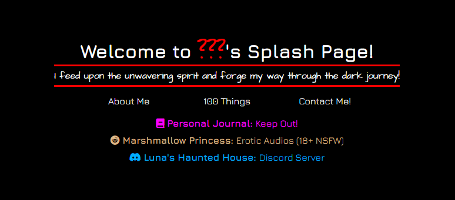
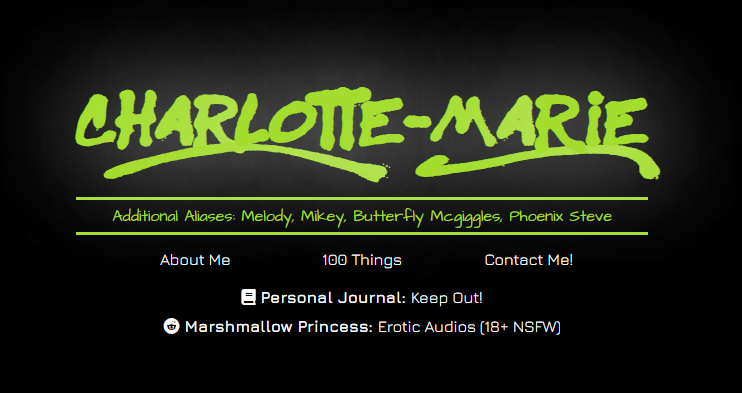

So with my name decided I went back to working on my website. And realised I would kinda have to rebuild the whole thing. The carousel of names was unncessary now. I knew who I was and it wasn't complicated.


So with the splash page looking way more cohesive and confident, and everything else more or less figured out I got to work making the journal pages.
There isn't really much to go into here. You can see for yourself the fruits of my labor. Just poke around the site more if you're interested.
I'm pretty proud of how a lot of it turned out. It should work well on mobile too. (If it doesn't let me know please.)